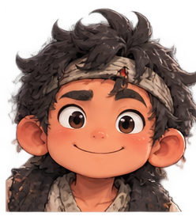
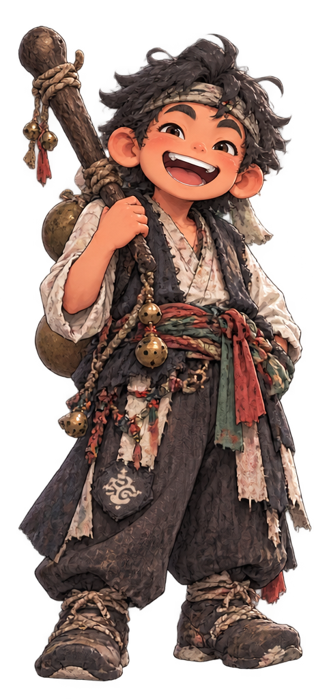

DOCHAEBI'S TREASURE HUNT
도채비의
보물찾기
복을 모아라, 보물을 찾아라. 도채비와 함께 복 포인트를 모으면 10월 31일 과수원피스에서 열리는 200,000원 상당 보물 추첨의 응모권을 받을 수 있어요.
10월 31일 과수원피스 현장에서 같은 번호를 입력하면 여기서 받은 응모권이 그대로 이어집니다. 추첨 확인 외 다른 용도로 쓰지 않으며 행사 종료 후 삭제합니다.
안녕!

도채비의 한마디
복 좀 모았어? 보물까지 얼마 안 남았는데?
10월 31일, 보물이 열린다!
200,000원 상당
보물 추첨
D-00
내 복 포인트
0
내 보물 응모권
0장
복 모으기
도채비와 함께 복을 모아보세요. 200복이 모이면 보물 응모권 1장.
여섯 신께 인사
행사장 곳곳에 강림해 계십니다. 가까이 가면 자동으로 인사가 이루어지고 복을 받아요.
인증하고 복 받기
놀이터
황금귤 캐치
30초 동안 떨어지는 귤을 잘라 터뜨리세요. 폭탄은 피할 것.
최고 0점
영등할망의 바람
바위를 피하고 복떡을 먹으면 배가 진화하고 포격이 시작됩니다.
최고 0초
기억력 카드
12장 중 같은 그림 6쌍. 빠를수록 복이 큽니다.
최고 기록 없음
하루에 많이 할수록 지급률이 조금씩 줄어듭니다.
보물창고
10월 31일, 과수원피스에서 보물이 열립니다.
보물
200,000원 상당
현장 추첨
D-00
내 복 포인트
0
보물 응모권
0장
1인 최대 5장까지 받을 수 있습니다.
내 응모권
추첨은 과수원피스 현장에서만 합니다.
에 번호를 부릅니다. 그 자리에 없으면 바로 다시 뽑아요. 응모권을 꼭 챙겨 오세요.
에 번호를 부릅니다. 그 자리에 없으면 바로 다시 뽑아요. 응모권을 꼭 챙겨 오세요.
탐라문화제 4컷
오늘의 탐라문화제를 사진으로 남겨보세요. 저장해서 SNS에 올리고 부스 스태프에게 보여주면 +300복.
사진을 넣은 뒤 칸 안에서 위아래로 끌면 보이는 위치를 맞출 수 있어요.
SNS 인증
올린 화면을 부스 스태프에게 보여주세요
하루 1회 · +300복

도채비
뭐 궁금한 거 있어?
순례자 - · 0장 보유
프로토타입 v0.3 · 박서방 제주점